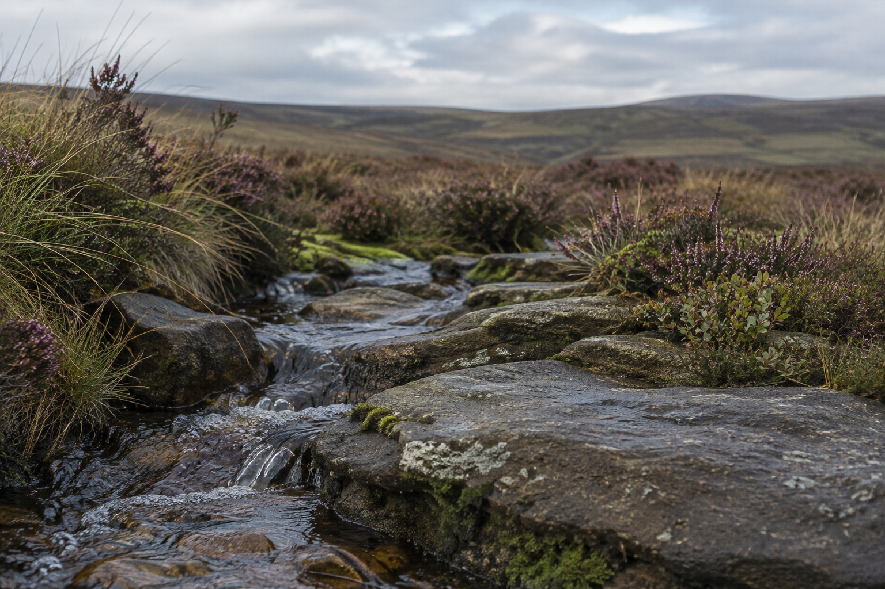
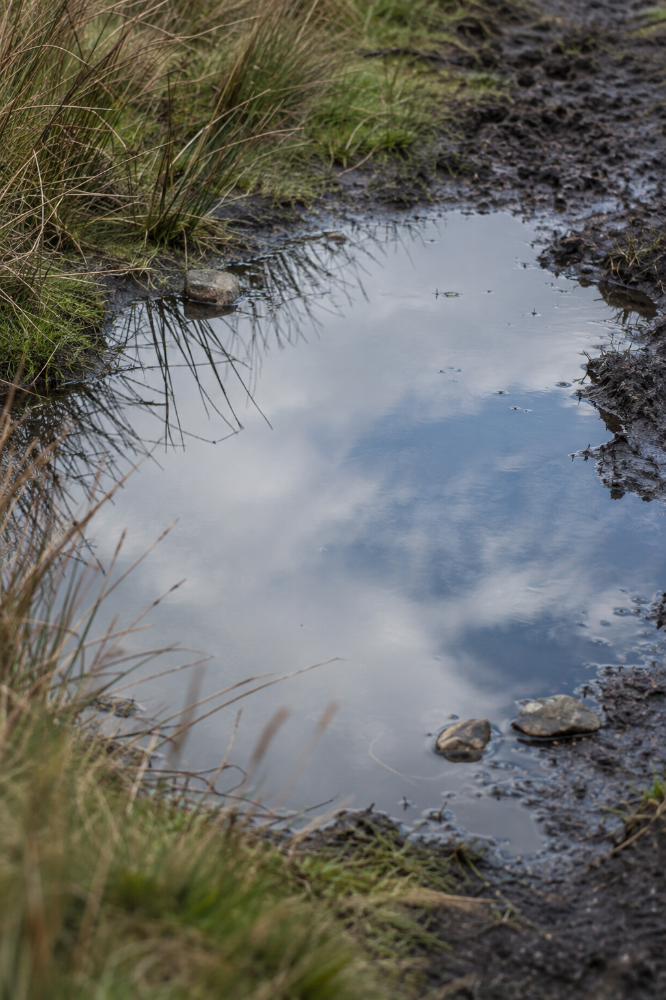
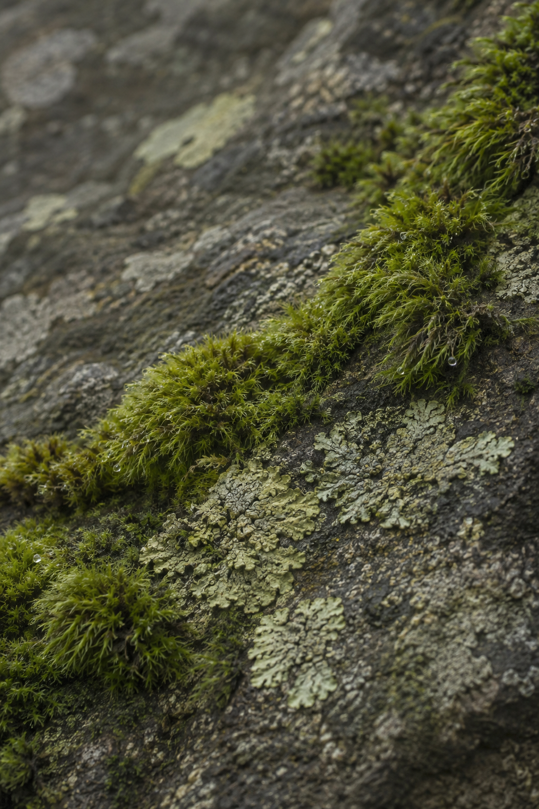
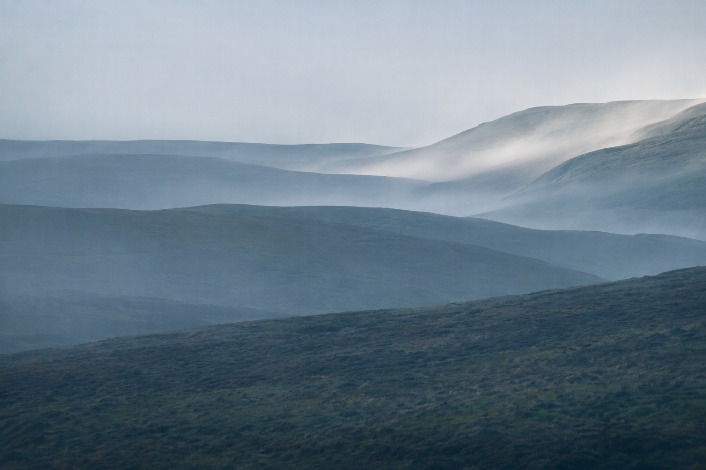
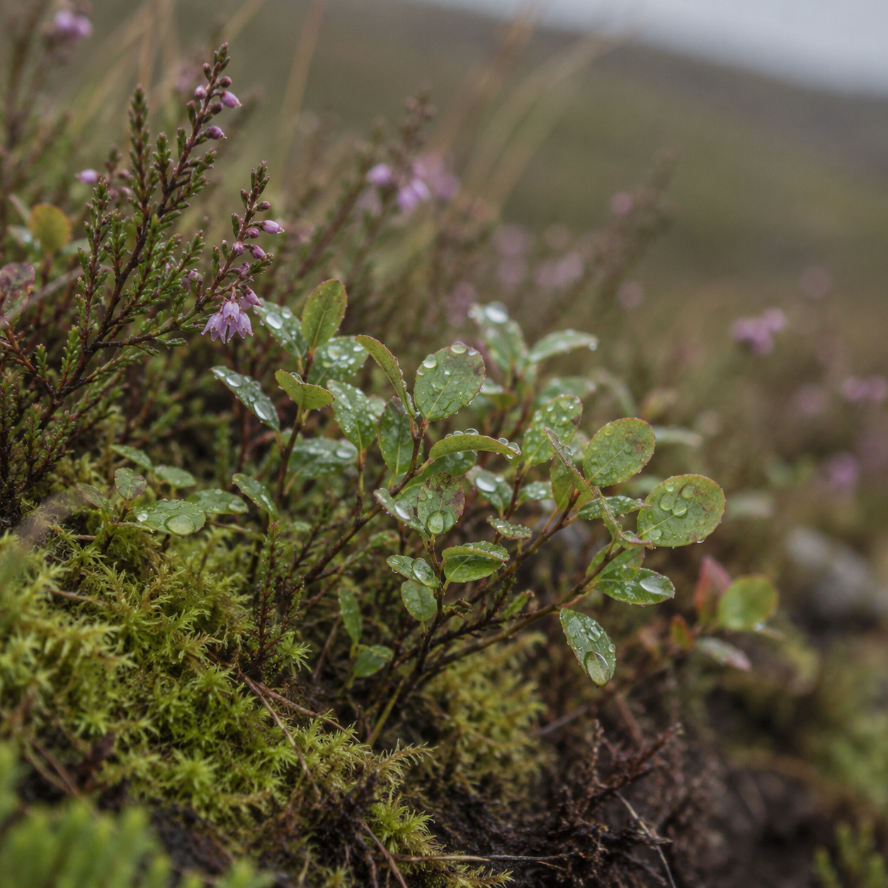
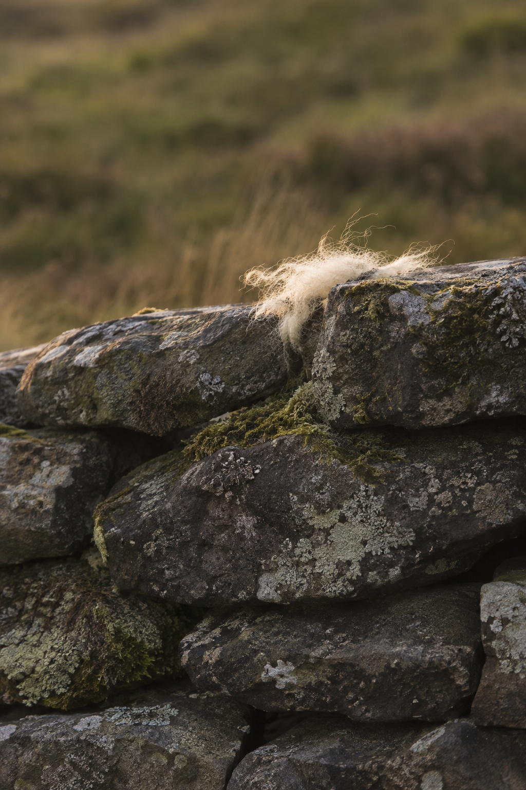
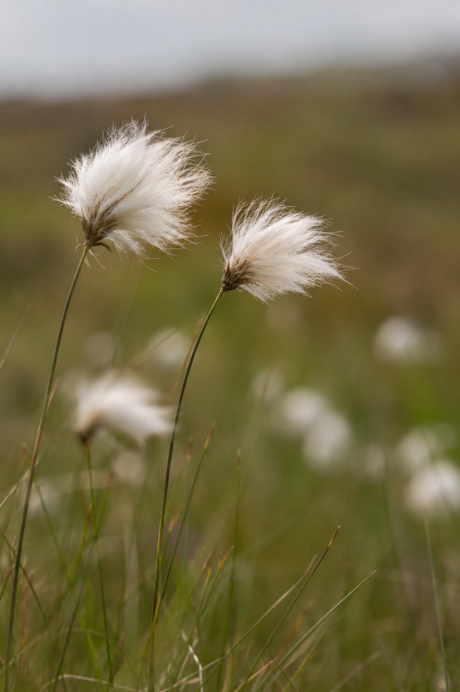
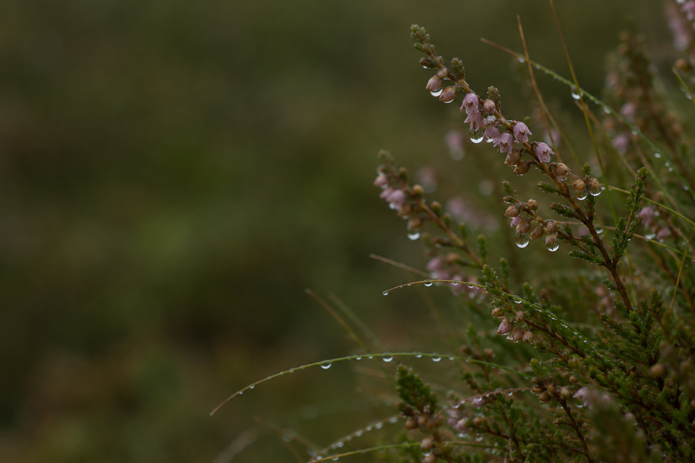

All generated with codex-images (ChatGPT image generation) on 3 November 2026. Every prompt starts with the base prompt and ends with the negative list in assets/imagery/STYLE.md; the subject line is shown here.

g01-moor-streamSlots: advice-landing-heroWet dark gritstone slabs, heather, bilberry and tussock grass, small clear peaty stream across open moor; low angle, stream lower left to centre; soft overcast; slate, stone, heather, hint of sky blue; 3:2.Pass. Real water and stone; no people or kit. Slightly busy for a hero, but the frame crops to the stream and slab.

g02-peat-puddleSlots: advice-landing-whoStill puddle on a dark peat track reflecting pale overcast sky, rushes and wet grass edges, gritstone pebbles; close-up looking down; 2:3.Pass. No footprints or figures. Reflection reads as Water.

g03-lichen-gritstoneSlots: advice-landing-whole-visitMacro of weathered dark gritstone with pale lichen and a diagonal of green moss, fine droplets; soft side light; 2:3.Pass. Convincing texture; no carved marks.

g04-moor-mistSlots: advice-how-break, advice-advisers-quoteLayered moorland ridges with mist lifting between them; 100mm compressed; brightest mist upper right, left calm; early cool light; slate blue; 3:2.Pass. No buildings, pylons or turbines. Left side carries ridges too, which is fine under the navy scrim.

g05-bilberry-heatherSlots: advice-how-heroBilberry leaves, heather sprigs and moss on a peat bank with raindrops; sharp centre; overcast; 1:1.Pass. No insects. A touch of heather purple adds life.

g06-wall-woolSlots: advice-agreement-heroTop of a dark gritstone dry-stone wall with lichen and moss, a tuft of white sheep wool on the stone; soft low side sun; 2:3.Pass. Wool and lichen convincing at 100%. No fence wire or animals.

g08-cotton-grassSlots: advice-who-heroCotton grass heads on a wet moor, very shallow focus, two or three sharp heads in the upper half; bright overcast with a faint warm rim; 2:3.Pass. Clean and quiet; good contrast with g02 on the adjacent landing page.

g09-heather-rainSlots: activities-team-quoteLow-key macro of raindrops on heather and grass, sharp detail in the right third, left and centre dark soft green; dull light; 3:2.Pass. Left two-thirds quiet for the quote.